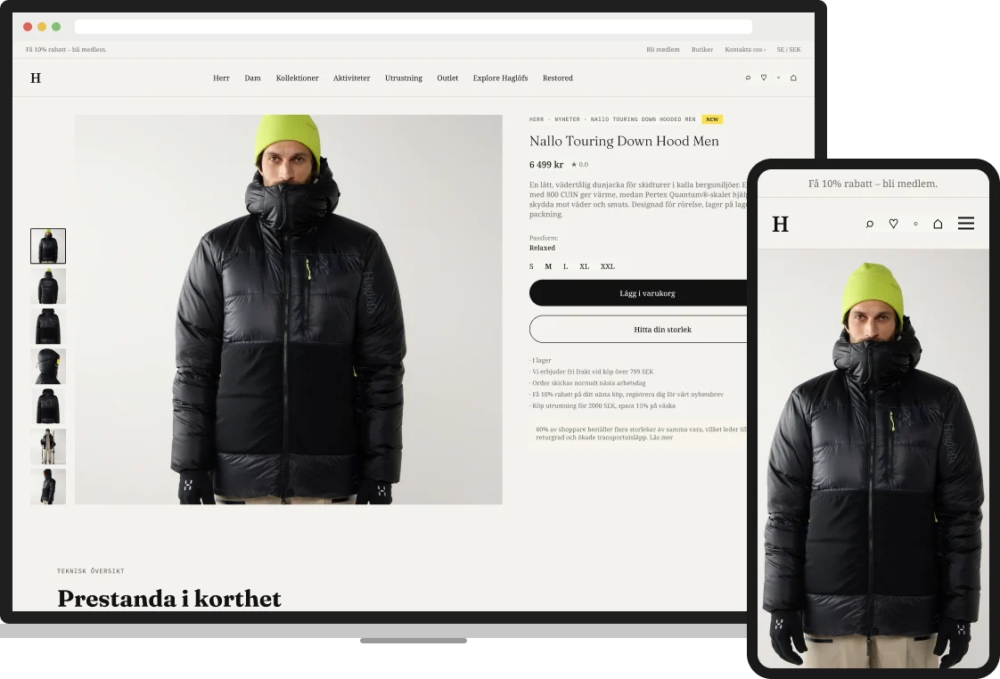
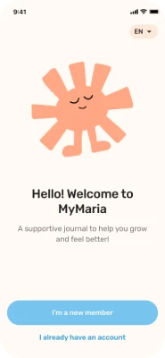
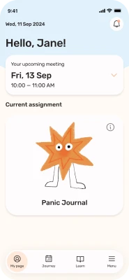
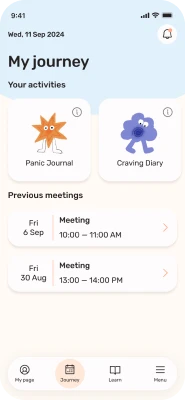
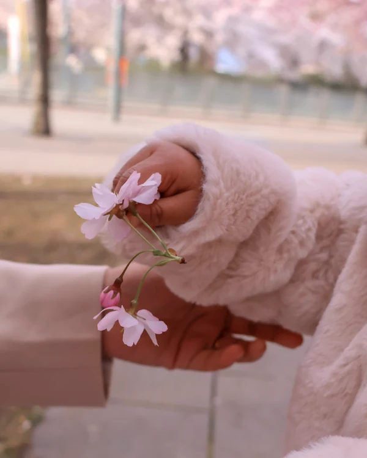

Haglöfs
A product page redesign that turns dense technical specs into a calm, premium shopping experience — revealing detail only when shoppers want it.
Client project · via Hyper Island UX/UI · Research · Visual design 2026
I’m a UX/UI designer.
I make complex, regulated products feel simple. Six years in law and compliance taught me where people get lost, and design is how I guide them through.
01What I bring
Interviews, journey maps and user testing that reveal what people actually need.
Flows and interfaces that make complex things feel simple and calm to use.
Colourful, consistent visual languages with character and a clear hierarchy.
Rapid mockups and prototypes with AI. Claude and ChatGPT to speed up research and cluster findings; Magnific for image and video.

A product page redesign that turns dense technical specs into a calm, premium shopping experience — revealing detail only when shoppers want it.
Client project · via Hyper Island UX/UI · Research · Visual design 2026



A treatment companion app for young people at Maria Ungdom, designed to feel safe, calm and encouraging — from first download to daily check-ins.
Client project · Maria Ungdom · via Hyper Island Role: UX designer · 6 weeks · Team of 4 Expert interviews · User journey · User testing
04About
I came to design from law. Six years in compliance taught me to make complex things clear, translating three books taught me that every word matters. Today I bring both to UX — and tell people’s stories through my camera, too.
More about me